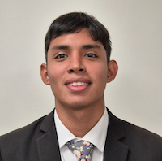

Kevin Josue Bazurto Holguin | WDD 130

My name is Kevin and I'm from Guayaquil, Ecuador. I love making music, playing the guitar and my ukulele, I've learned to play them for my own. I am the first of three children and recently returned from my mission in Guayaquil East. In the mission I discovered that I enojy helping people with his needed cause helping them is a way to develop unity and good relations, I also learned english a lot thank's to my companions in my mission and some courses. Now I started to learn germany, it's fun starting to learn a new language. I love learning about software development in Pathway worldwaide too, and I'm exited to apply all the knowleged learned in this courses